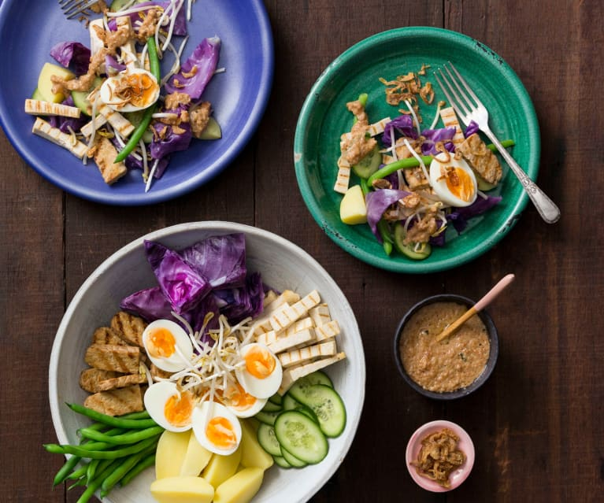

It's My Birthday Party!
On the 28th September
Experience the Culture of Indonesia:
-
A local Indonesian specialty dish.
-
Reason: Sharing authentic Indonesian cuisine adds to the cultural
immersion and provides a delicious treat for everyone to enjoy.
-
Nasi Goreng (Indonesian fried rice is a flavorful and
versatile dish, often customized with your choice of protein,
vegetables, and spices.)

-
Sate Ayam (These grilled skewers of meat (usually chicken,
beef, or pork) are a popular street food, often served with peanut
sauce and spicy sambal.)

-
Bakso (Meatball soup, a comforting and flavorful dish found
throughout Indonesia.)

-
Gado-gado (A delicious and healthy salad made with a variety
of vegetables, tofu, and hard-boiled eggs, all tossed in a peanut
sauce.)

-
Daging Rendang (This slow-cooked beef curry from West Sumatra
is renowned for its rich, spicy flavors and tender meat. It's often
considered one of the world's most delicious dishes.)

-
Traditional Indonesian music performance.
-
Reason: Live music enhances the festive atmosphere and introduces guests
to the beautiful sounds of Indonesian music.
-
A brief cultural presentation or a game related to Indonesian traditions
-
Reason: Educating guests about Indonesian culture adds a deeper layer to
the party experience and fosters appreciation for Indonesian heritage.
This is Where You Need to Go:
Google Map Link
Back to Homepage